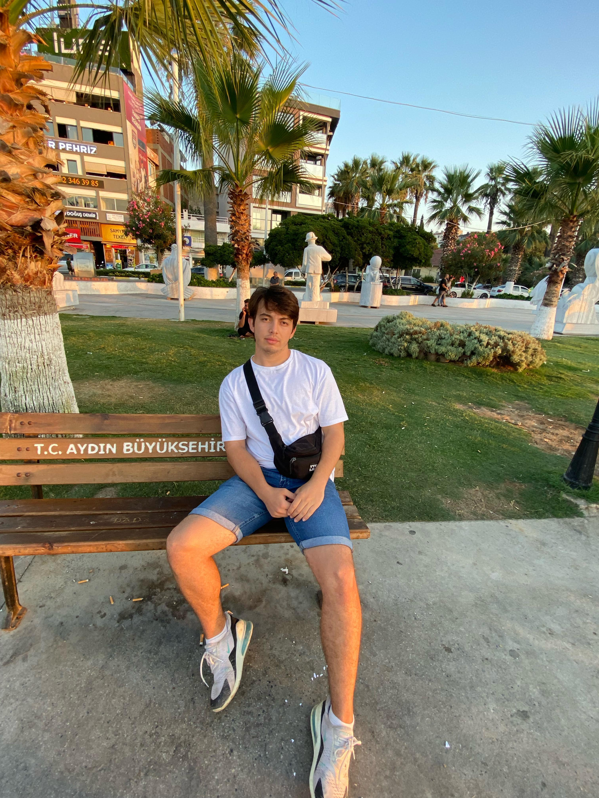

About me

cat hakkimda.txt
Hello, I am Melih Demircan. I am a 3rd year student of Computer Engineering at Kütahya Dumlupınar University. I focus on developing myself in the fields of artificial intelligence, internet of things (IoT) and mobile application programming. In today's world where technology is changing rapidly, I aim to produce innovative projects and solutions, and I gain experience by doing various projects in these areas. I constantly try to stay up-to-date both in my academic career and in my personal development. Thanks to my interest in learning and research, I follow current technologies in the software world and apply what I learn to my projects.
Technologies
ls -l Technologies/
C
C++
C#
Flutter (Dart)
Arduino
Unity
Java
Linux
git
githup
SQL
Phyton
Android Studio
Projects
ls -l Projects/

Çalışma Konularım
cat calisma_konulari.log
-
Rust Nedir ?
Rust dili hakkında bilgi edinildi ve Rust kodlama diline giriş yapıldı.
-
Uzayda Yapay Zeka
Yapay zekanın uzay görevlerinde nasıl ve hangi süreçlerde kullanabileceğinin araştırması yapıldı.